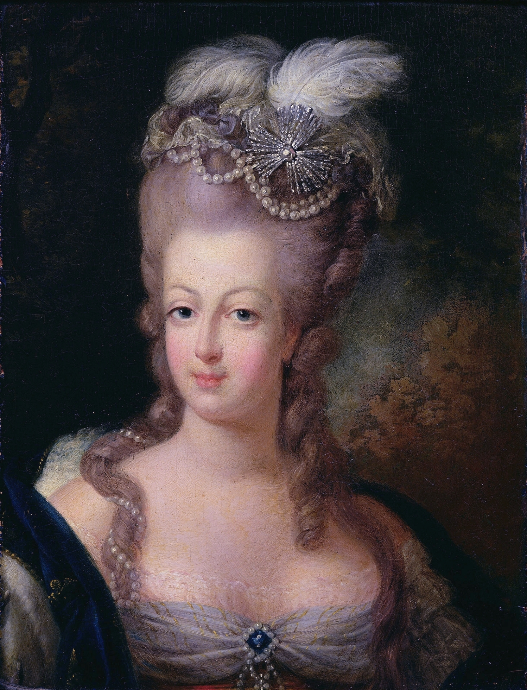
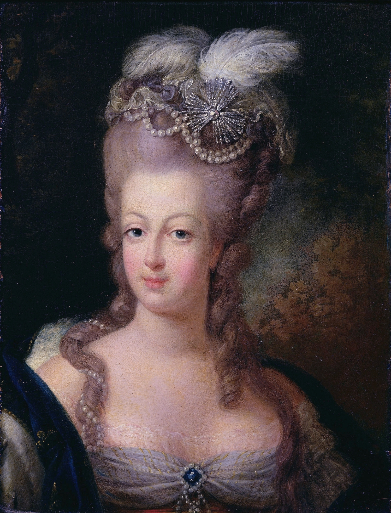

Maine Coons are cats of unkown origin and are not your average cat on the block. They have a lifespan of 12-15 years of age, can have a weight of 13-18 pounds males and 8-12 for females. Thier huge fur helps warm them up in cold tempertures. Most people will relate thier appearance to the Lynx but in my opinion some look like Bobcats. Let's talk more about them

Personality and behavior
Maine Coons are describe as playful and social cats, becoming friends with mostly anyone; other pets included. They also show dog-like behavior instead of cat: examples can be walking them with a leash, play fetch, perfroimg, etc. Other unique trait is that they love water so don't worry about them going crazy when givien a bath.
Fun Facts
- No one knows where Maine Coons come fromand asuume they came from Maine, USA. That is also how they got the name.
- They are natural breeders, meaing no human intervention in mating process
- There is a myth that the Maine Coons are decendents of Marie Antoinette's long haired cats.(Meaning the Maine Coons long fur)
 

Overall:
Maine Coons are awesome companions who you play with, have fun with to pet non-stop. A little tip: since Maine Coons are playful it's to have space for it so if you live in a medium to large size apartments or houses with large backyards go for this guy or gal!